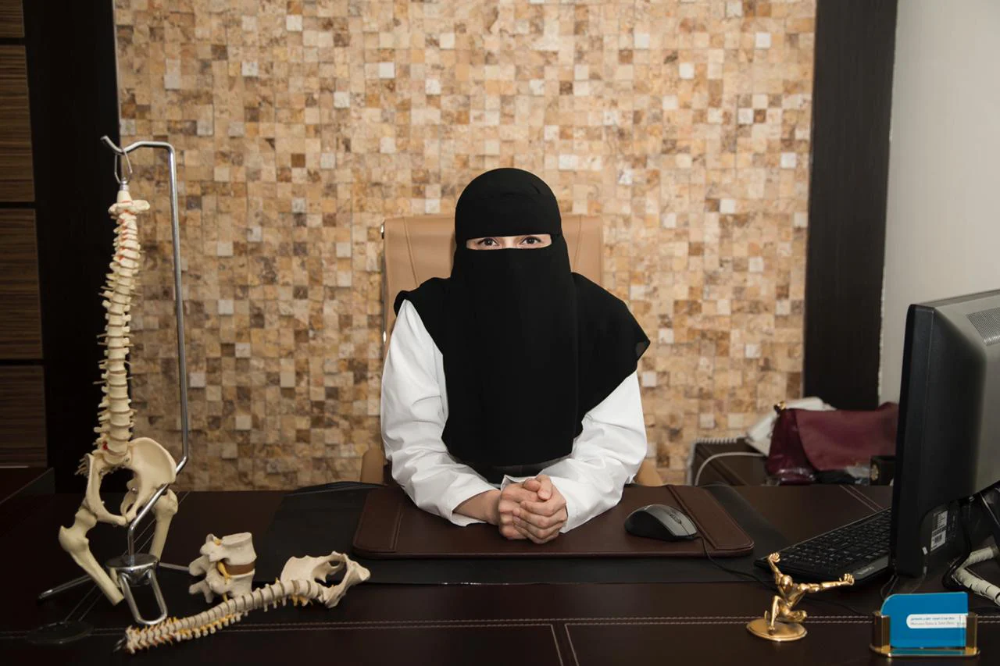

التحويل والفحص
أحضر تحويلًا للعلاج الطبيعي من طبيب، حسب أنظمة وزارة الصحة قبل بدء العلاج.
نفحصك ونراجع الأشعة والتحاليل، ثم نضع التشخيص وخطة العلاج معك.

كيروبراكتك وعلاج طبيعي للرجال والنساء والأطفال. على طريق الملك عبد العزيز في حي السليمانية بالرياض، منذ 2014.
أحضر التحويل. حسب أنظمة وزارة الصحة، نحتاج تحويلًا للعلاج الطبيعي من طبيبك.
من 2014 ونحن في السليمانية نعالج آلام الظهر والرقبة والمفاصل والديسك والجنف البسيط، ونبحث عن سبب الألم بدل تسكين أعراضه فقط.
كيروبراكتك وعلاج طبيعي تحت سقف واحد. طبيبة الكيروبراكتك تستخدم تقنية الجونستيد وتقنيات متنوعة، وأخصائيات العلاج الطبيعي يتابعن التأهيل والإصابات الرياضية وما بعد العمليات وصحة المرأة.
لا يوجد حد للعمر. نعالج المواليد والأطفال والكبار، ولكل حالة خطة تناسب العمر والتشخيص.
فرع واحد على طريق الملك عبد العزيز. لا نقدم زيارات منزلية حاليًا.
ستة علاجات رئيسية، إضافة إلى الموجات التصادمية والليزر والتيب والفرشات الطبية. كل العلاجات →
تعيد الطبيبة الفقرة "العالقة" إلى حركتها السليمة بحركة يدوية موزونة ودقيقة، فيخف الضغط عن الأعصاب.
نحسّن حركة العضلات وقوتها لتعود لحياتك اليومية، أو نؤهلك بعد الجراحة. لجميع الأعمار، وللأطفال الذين يعانون من مشاكل في الهيكل العظمي والعضلي.
برنامج علاج طبيعي مع تمارين تساعد على الالتئام وتقوية العضلات واستعادة مرونتها، لتعود لنشاطاتك المفضلة. لك ولأفراد عائلتك.

علاج طبيعي بعد جراحة الركبة أو الكتف أو غيرها. فريقنا يوجهك ويوجه عائلتك في كل خطوة.
أخصائية علاج طبيعي متخصصة في صحة المرأة تعالج آلام العضلات والمفاصل أثناء الحمل وبعد الولادة.

التقنيات والأجهزة التي يعمل بها فريقنا، بالأسماء التي ستسمعها في المركز.

تقف على الجهاز فيكشف عدم التوازن في القدم ونقاط الضغط غير الطبيعية ومشاكل القوس، وهي أسباب لآلام القدم والكاحل والركبة والورك.
بعدها نصف لك فرشات طبية مصممة على مقاسك من شركة Foot Levelers الأمريكية، لتدعمك وأنت واقف أو تمشي أو تجري.
ماذا يحدث من لحظة دخولك، في ثلاث خطوات.
أحضر تحويلًا للعلاج الطبيعي من طبيب، حسب أنظمة وزارة الصحة قبل بدء العلاج.
نفحصك ونراجع الأشعة والتحاليل، ثم نضع التشخيص وخطة العلاج معك.
صورة توضيحيةتعديل يدوي لتحرير المفصل، ثم علاج طبيعي مثل الذبذبات الكهربائية والكمادات والموجات الصوتية وتمارين لتقوية المنطقة.
قد تسمع صوت طقطقة، وهو غاز يخرج من المفصل وليس كسرًا. التعديل لا يؤلم.

حسب حالتك قد نضع لك شريط RockTape أو نطلب فرشات طبية لتثبيت العمود الفقري بين الزيارات.
الزيارات التالية على نفس الخطة، مع تعديلات بسيطة كلما تحسنت.
طبيبة كيروبراكتك وثلاث أخصائيات علاج طبيعي. اطلب من تريد بالاسم عند الحجز. Full qualifications (English)

البورد الأمريكي والكندي للكيروبراكتك · الإبر الصينية والإبر الجافة
طبيبة كيروبراكتك، أكثر من 20 سنة خبرة

الإبر الجافة · العلاج اليدوي · تاي تشي لالتهاب المفاصل والوقاية من السقوط
أخصائية علاج طبيعي، أستيوباثي

الإبر الجافة · العلاج اليدوي · تاي تشي · مدربة لياقة CanFitPro
أخصائية علاج طبيعي، أستيوباثي
تأهيل قاع الحوض · فحص ما قبل وبعد الولادة · تمارين الحمل
صحة المرأة وتأهيل قاع الحوض
أكثر ما نسمعه في الاستقبال. لأي سؤال آخر اتصل على 011 466 1664.
لا. التعديل حركة لطيفة ودقيقة باتجاه محدد على مفصل عالق. قد تسمع طقطقة، وهي غاز النيتروجين يخرج من المفصل وليست عظامك. إذا كنت متوترًا قد تشعر بشد عضلي في نفس اليوم واليوم التالي ثم يزول.
نعم، لا يوجد حد للعمر. من المواليد إلى كبار السن، الجميع لديهم عمود فقري. نستخدم طرقًا مختلفة حسب العمر والتشخيص.
نعم. يخفف آلام الظهر والرقبة وعرق النسا أثناء الحمل، ونستخدم تقنيات خاصة للحوامل. وأخصائية صحة المرأة تقدم برنامج التهيئة للولادة.
نعم. حسب أنظمة وزارة الصحة، أحضر تحويلًا للعلاج الطبيعي من طبيب قبل بدء العلاج.
طريق الملك عبد العزيز، حي السليمانية، الرياض4705 King Abdulaziz Road, Sulimaniya, Riyadh
فرعنا الوحيد. اتصل أو راسلنا على واتساب قبل حضورك لتحديد موعد.
| الأحد | 11 ص – 8 م |
| الاثنين | 11 ص – 8 م |
| الثلاثاء | 11 ص – 8 م |
| الأربعاء | 11 ص – 8 م |
| الخميس | 11 ص – 8 م |
| الجمعة | مغلق |
| السبت | مغلق |
King Abdulaziz Rdحي السليمانية، الرياضاضغط لعرض الخريطةجارٍ تحميل خريطة Google